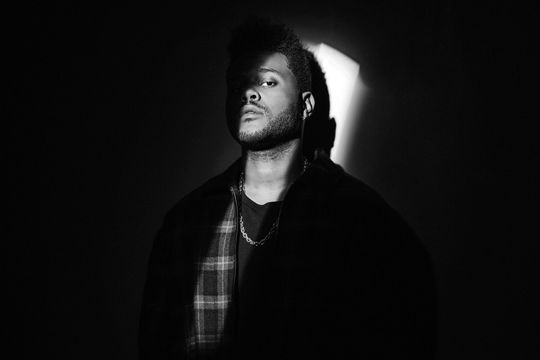

The Weeknd
 Канадский певец, автор песен и актер. Известный своей звуковой универсальностью и мрачным лиризмом, его музыка исследует эскапизм, романтику и меланхолию и часто вдохновляется личным опытом. Он получил множество наград, в том числе четыре премии «Грэмми», латиноамериканскую премию «Грэмми», 20 музыкальных премий Billboard, 17 премий Juno, шесть премий American Music Awards, две премии MTV Video Music Awards, а также номинации на премию «Оскар» и премию «Эмми Прайм-тайм».Один из самых продаваемых музыкальных исполнителей в мире с более чем 75 миллионами проданных пластинок, Эйбел владеет несколькими рекордами стриминга и чартов Billboard. Он первый артист, одновременно дебютировавший в тройке лучших песен Hot R&B/Hip-Hop, в то время как «Blinding Lights» входит в рейтинг величайших песен Hot 100 в истории Billboard. Эйбел, которого часто считают выдающейся фигурой в современной популярной музыке, был включен Time в список самых влиятельных людей мира в 2020 году. Будучи сторонником расового равенства и продовольственной безопасности, он был назначен послом доброй воли Всемирной продовольственной программы в 2021 году.